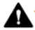

Over de tablet Handleiding voor veiligheid/regelgeving
Over de tablet Handleiding voor veiligheid/regelgevingWaar je productinformatie kunt vinden
In deze handleiding zijn de algemene veiligheidsrichtlijnen opgenomen die je kunt vinden in het gedrukte boekje over veiligheid en garantie dat met je Google Pixel Tablet en oplaaddock met speakers is meegeleverd. Het boekje bevat ook aanvullende informatie over veiligheid, garantie en regelgeving voor de tablet en het oplaaddock.
Informatie over veiligheid en regelgeving: g.co/pixeltablet/reg of Instellingen Over de tablet Handleiding voor veiligheid/regelgeving
De garantiebepalingen voor het land waar je je aankoop hebt gedaan, waaronder instructies voor het indienen van claims: g.co/devicewarranty.
Labels voor de elektronische regelgeving en SAR-waarden (Specific Absorption Rate) voor je apparaat: Instellingen Over de tablet Regelgevingslabels.
Informatie over ecologisch ontwerp (energieprestaties): g.co/ecodesign
Hulp bij het product: g.co/pixeltablet/care
|  | WAARSCHUWING: GEZONDHEIDS- EN VEILIGHEIDSINFORMATIE. LEES DIT VÓÓR GEBRUIK OM HET RISICO OP PERSOONLIJK LETSEL, ONGEMAK, SCHADE AAN EIGENDOMMEN (WAARONDER SCHADE AAN JE GOOGLE PIXEL TABLET EN DE ACCESSOIRES OF VERBONDEN APPARATEN) EN ANDERE MOGELIJKE GEVAREN TE VERKLEINEN. |
Ga voorzichtig om met je tablet, dockstation en accessoires. Je kunt je apparaat of de meegeleverde batterijen of accessoires beschadigen als je het apparaat uit elkaar haalt, laat vallen, buigt, blootstelt aan vuur, plet of doorboort. Koppel de tablet voorzichtig los als deze is gedockt. Gebruik geen tablet, dockstation en accessoires met een beschadigde behuizing, een gebarsten scherm of een andere vorm van fysieke schade. Het gebruik van een tablet, dockstation of accessoires met beschadigingen kan leiden tot oververhitting of letsel. Stel je apparaten niet bloot aan vloeistoffen, omdat dit kortsluiting en oververhitting kan veroorzaken. Als een van je apparaten nat is geworden, probeer het dan niet te drogen met behulp van een externe warmtebron.
De tablet, het dockstation en de accessoires zijn ontworpen om binnenshuis in een droge omgeving te functioneren. Je apparaten werken het best bij omgevingstemperaturen tussen 0 en 35 °C en moeten worden bewaard bij omgevingstemperaturen tussen -20 en 45 °C. Stel je apparaten niet bloot aan temperaturen boven 45 °C, zoals op het dashboard van een auto of in de buurt van een verwarmingsrooster. Hierdoor kunnen de apparaten beschadigd raken, kan de batterij oververhitten of kan er brandgevaar ontstaan. Houd je apparaten uit de buurt van warmtebronnen en direct zonlicht. Als je apparaat te warm wordt, koppel je het los van de voedingsbron (als het daarop is aangesloten) en verplaats je het naar een koelere plaats. Gebruik het pas weer als het afgekoeld is. Je producten werken het beste tot een hoogte van maximaal 5000 m.
Bij bepaalde activiteiten, zoals gamen, video-opnamen, gebruik als zaklamp of de virtual reality- of augmented reality-functies, kan je tablet meer warmte genereren dan onder typische gebruiksomstandigheden. Hierdoor kan je tablet overschakelen op een spaarstand of tijdelijk worden uitgezet. Wees in deze gevallen extra voorzichtig. Bekijk het gedeelte 'Langdurige blootstelling aan warmte' voor meer informatie over de risico's die gepaard gaan met langdurige blootstelling aan warmte.
Probeer je tablet, dockstation en accessoires niet zelf te repareren. Demontage van het apparaat kan letsel of schade aan het apparaat veroorzaken. Neem contact op met de klantenservice als het product niet goed werkt of is beschadigd. Ga voor meer informatie naar g.co/pixeltablet/care.
Zorg voor een goede ventilatie als je het oplaaddock, de voedingsadapter en de tablet gebruikt of oplaadt. Als je een beschadigde kabel of voedingsadapter gebruikt, of als je het apparaat oplaadt als er vocht aanwezig is, kan dit brand, elektrische schokken, letsel of schade aan de apparaten of andere eigendommen veroorzaken. Zorg dat de oplaadpinnen vrij zijn van vocht of vuil voordat je het dockstation gebruikt. Laad je tablet niet op als deze nat is. Laad je apparaat niet op in direct zonlicht.
Steek de voedingsadapter in een makkelijk bereikbaar stopcontact in de buurt van het apparaat als je het oplaadt. Forceer de voedingsadapter en andere stekkers niet in een stopcontact als er geen ruimte is voor beide. Trek aan de adapter als je deze uit een stopcontact haalt. Trek nooit aan de oplaadkabel. Het is belangrijk dat je de kabel niet draait, knikt of afklemt en dat je de connector niet met kracht in een poort duwt. Volg de instructies als je tijdens het opladen een bericht krijgt dat je de voedingsadapter uit het stopcontact moet halen of moet loskoppelen van het dockstation. Voordat je het apparaat opnieuw probeert op te laden, kijk je of de connector van de voedingsadapterkabel en de oplaadpoort van het apparaat droog en schoon zijn.
Plaats geen metalen of magnetische voorwerpen op de blootliggende pinnen van het dockstation en de tablet als deze is gedockt. Hierdoor kan het object of het apparaat namelijk warm worden.
Het oplaaddock met speakers wordt geleverd met een netspanningsadapter die over de juiste certificeringen beschikt.
Laad je tablet op met een oplader met USB-C PD of geschikte oplaadaccessoires die beschikbaar zijn in de Google Store of bij geautoriseerde Google-resellers (te herkennen aan de badge 'Gemaakt voor' van Google). De netspanningsadapter moet zijn gecertificeerd met een beperkte stroomvoorziening (limited power source, LPS) volgens IEC 60950-1 en/of zijn geclassificeerd als PS2 volgens IEC 62368-1, nominaal: 5 volt gelijkstroom, maximaal 3 ampère; 9 volt gelijkstroom, maximaal 2 ampère; of beide. Het gebruik van ongeschikte oplaadaccessoires kan leiden tot brand, elektrische schokken, letsel of schade aan het apparaat en de accessoires.
De tablet, het dockstation en de voedingsadapter genereren tijdens normaal gebruik warmte en voldoen aan de geldende normen en limieten voor oppervlaktetemperatuur. Vermijd langdurig contact met de huid tijdens het gebruik of het opladen van het apparaat. Langdurige blootstelling van de huid aan hete oppervlakken kan leiden tot ongemak of brandwonden. Slaap niet op of met je apparaat of de voedingsadapter en bedek ze niet met een deken of een kussen. Houd hiermee rekening als je een aandoening hebt waardoor je warmte tegen de huid niet goed kunt waarnemen.
Dit apparaat is geen speelgoed. Je apparaten kunnen kleine onderdelen, plastic, kabels, glas of metalen elementen bevatten (of hiermee worden geleverd), evenals onderdelen met scherpe randen die letsel kunnen veroorzaken of een risico op verstikking of verwurging kunnen vormen. Er zijn kinderen om het leven gekomen doordat ze in snoeren of kabels verstrikt raakten. Houd het apparaat en de bijbehorende accessoires, waaronder snoeren en kabels, buiten het bereik van kinderen (op meer dan 90 cm afstand) en laat ze niet met de tablet en de bijbehorende accessoires spelen. Ze kunnen zichzelf of anderen verwonden of kunnen de apparaten per ongeluk beschadigen. Neem direct contact op met een arts als ze kleine onderdelen inslikken of letsel oplopen.
 |
Langdurige blootstelling aan harde geluiden (inclusief muziek) kan leiden tot gehoorverlies. Vermijd langdurig luisteren naar een hoog volume om mogelijke gehoorschade te voorkomen. Door langdurige blootstelling aan hoge volumes en achtergrondruis kunnen harde geluiden minder luid lijken dan ze eigenlijk zijn. Check het volume voordat je een hoofdtelefoon of oortelefoon gebruikt. |
Deze tablet bevat een oplaadbare Li-ion-batterij. Dit is een gevoelig onderdeel dat bij beschadiging letsel kan veroorzaken. Probeer niet zelf de batterij te verwijderen. Neem contact op met Google of een door Google geautoriseerde dienstverlener om de batterij te vervangen. Ga voor contactgegevens naar g.co/pixeltablet/contact. Als de batterij door niet-gekwalificeerde personen wordt vervangen, kan je apparaat beschadigd raken. Onjuiste vervanging of gebruik van een ongeschikte batterij kan leiden tot brand, een explosie, lekkage of ander gevaar. Het is niet toegestaan de batterij aan te passen, te hergebruiken of te repareren, te perforeren of te proberen voorwerpen in de batterij te steken, de batterij onder te dompelen in of bloot te stellen aan water of andere vloeistoffen of bloot te stellen aan vuur, overmatige hitte en/of andere gevaren.
Verwijder en vervoer het apparaat, de batterijen en de accessoires volgens de lokale milieu- en vervoersregelgeving. Vervoer ze niet op een ongeschikte manier en gooi ze niet weg met het normale huishoudelijke afval. Onjuiste afvalscheiding of onjuist vervoer kan leiden tot brand, een explosie en/of andere gevaren. Je mag het apparaat niet openen, pletten, verwarmen boven 45 °C of verbranden. Ga naar g.co/HWRecyclingProgram voor meer informatie over het recyclen van je apparaat, de batterijen en de accessoires.
Gebruik of bewaar de onderdelen en accessoires van je tablet en dockstation niet in stoffige, rokerige, vochtige of vuile omgevingen of in de buurt van magnetische velden, om schade aan de onderdelen of interne circuits van het apparaat te voorkomen. Houd je apparaat uit de buurt van warmtebronnen en direct zonlicht. Laat je apparaten niet liggen in een voertuig of op plaatsen waar de temperatuur hoger kan zijn dan 45 °C, zoals op het dashboard van een auto, op de vensterbank, in de buurt van een verwarmingsrooster of achter glas dat gedurende langere tijd wordt blootgesteld aan direct zonlicht of sterk UV-licht. Dit kan de apparaten beschadigen, de batterij oververhitten of brand- of explosiegevaar veroorzaken.
Dit apparaat is geëvalueerd en voldoet aan de toepasselijke wettelijke vereisten voor blootstelling aan radiogolven. Het is ontworpen en geproduceerd om de stralingslimieten van de FCC (Federal Communications Commission) voor blootstelling aan radiofrequenties (RF) niet te overschrijden.
In landen waar de maximale SAR-waarde (Specific Absorption Rate) gemiddeld 1,6 W/kg op 1 gram weefsel bedraagt, zijn de hoogste SAR-waarden voor dit apparaattype 1,14 W/kg bij gebruik tegen het lichaam zonder tussenruimte. In landen waar de maximale SAR-waarde (Specific Absorption Rate) gemiddeld 2,0 W/kg op 10 gram weefsel en gemiddeld 4,0 W/kg op 1 gram weefsel bedraagt voor gebruik tegen de ledematen, zijn de hoogste SAR-waarden voor dit apparaattype 0,56 W/kg bij gebruik tegen het lichaam zonder tussenruimte en 1,93 W/kg voor de ledematen zonder tussenruimte.
Zo vind je de toepasselijke SAR-waarden in elk van deze jurisdicties op je tablet: Instellingen Over de tablet Regelgevingslabels.
Gebruik een handsfree-optie om de blootstelling aan RF-energie te verminderen, zoals de ingebouwde luidspreker, de meegeleverde hoofdtelefoon of andere vergelijkbare accessoires. De accessoires van het apparaat, zoals een hoesje of houder, mogen geen metalen onderdelen bevatten. Houd het apparaat uit de buurt van je lichaam om te voldoen aan de vereiste afstand.
Aanvullende informatie over SAR vind je op de volgende pagina's:
fcc.gov
icnirp.org
ec.europa.eu
dot.gov.in
Dit apparaat is geëvalueerd en voldoet aan de toepasselijke wettelijke vereisten voor blootstelling aan radiogolven. Het is ontworpen en geproduceerd om de stralingslimieten van de FCC (Federal Communications Commission) voor blootstelling aan radiofrequenties (RF) niet te overschrijden.
Houd je aan de regels die het gebruik van draadloze technologie (zoals mobiele data of wifi) verbieden. Je apparaat is ontworpen om te voldoen aan de wetgeving voor radiofrequentie-emissie, maar het gebruik van draadloze apparaten kan een negatieve invloed hebben op andere elektronische apparatuur. Als je bijvoorbeeld het vliegtuig neemt, gebruik je je draadloze apparaat tijdens de vlucht of direct vóór het instappen alleen volgens de instructies van de luchtvaartmaatschappij. Het gebruik van een draadloos apparaat in een vliegtuig kan draadloze netwerken verstoren, gevaar opleveren voor de werking van vliegtuigen of zelfs onwettig zijn. Je kunt je apparaat mogelijk gebruiken in de vliegtuigmodus.
Als het gebruik van ultra-wideband is verboden in jouw regio, zoals in een vliegtuig, kun je het uitzetten door de vliegtuigmodus aan te zetten. Als je de vliegtuigmodus wilt aanzetten, open je Snelle instellingen en tik je op Vliegtuigmodus. Ga naar Instellingen Netwerk en internet Vliegtuigmodus om de vliegtuigmodus uit te zetten.
Dit apparaat bevat radiozenders en andere onderdelen die elektromagnetische velden uitzenden. Ook bevat het apparaat magneten. Deze elektromagnetische velden en magneten kunnen storingen veroorzaken in medische apparaten, zoals pacemakers en andere geïmplanteerde medische apparaten. Houd de tablet, accessoires en bijbehorende opladers altijd op een veilige afstand van het medische apparaat. Heb je vragen over het gebruik van je Google-apparaat met of in de buurt van je medische apparaat? Neem dan contact op met je zorgverlener voordat je de tablet en accessoires gebruikt. Als je vermoedt dat je tablet en accessoires storingen veroorzaken in je medische apparaat, zet je het Google-apparaat uit en neem je contact op met je arts voor specifieke informatie over je medische apparaat.
Zet je draadloze apparaat uit als hierom wordt gevraagd in ziekenhuizen, klinieken of zorginstellingen. Deze verzoeken zijn bedoeld om mogelijke storing van gevoelige medische apparatuur te voorkomen.
Sommige mensen kunnen reageren op materialen, zoals nikkel, in voorwerpen die langdurig in contact komen met de huid. Stop met het gebruik van het apparaat en neem contact op met een arts als je last hebt van huidirritatie op plekken waar je vaak in aanraking komt met het apparaat.
Een klein percentage van de gebruikers kan last hebben van hoofdpijn, epileptische aanvallen, black-outs, vermoeide ogen, vermoeidheid of droge ogen die worden veroorzaakt door visuele stimuli, zoals knipperende lichten, felgekleurde patronen of het gebruik van elektronica met schermen. Ook mensen die nog nooit last hebben gehad van zulke problemen, kunnen deze symptomen ervaren. Als je in het verleden last hebt gehad van epileptische aanvallen, black-outs of een medische aandoening, of als je ongemak hebt ervaren die volgens jou kan worden beïnvloed door je tablet, neem je contact op met een arts voordat je het apparaat gebruikt. Stop onmiddellijk met het gebruik van je tablet en neem contact op met een arts als je symptomen ervaart waarvan je denkt dat deze worden veroorzaakt of beïnvloed door je tablet (bijvoorbeeld hoofdpijn, black-outs of epileptische aanvallen).
Repetitieve activiteiten, zoals typen, tikken of swipen op het scherm van je tablet, kunnen ongemak veroorzaken in je vingers, handen, polsen, armen, schouders of andere delen van je lichaam. Als je last hebt tijdens zulke activiteiten, stop je met het gebruik van je tablet en neem je contact op met je arts.
Volg deze richtlijnen bij het gebruik, de opslag of het schoonmaken van je tablet, dockstation en accessoires:
Gebruik de tablet, het dockstation en de accessoires niet bij een omgevingstemperatuur lager dan 0 °C of hoger dan 35 °C. Als de binnentemperatuur van het apparaat de normale bedrijfstemperatuur overschrijdt, kun je het volgende gedrag verwachten terwijl het apparaat probeert de temperatuur te regelen: de prestaties en connectiviteit nemen af, er kan niet worden opgeladen of het scherm of het apparaat gaat uit. Je kunt het apparaat mogelijk niet gebruiken als het de temperatuur regelt. Verplaats het apparaat naar een koelere (of warmere) locatie en wacht een paar minuten voordat je het opnieuw probeert te gebruiken.
Koppel de tablet, het dockstation en de voedingsadapter los voordat je ze schoonmaakt, tijdens onweer of als je ze lange perioden niet gebruikt. Maak je tablet niet schoon terwijl deze wordt opgeladen, omdat dit persoonlijk letsel of schade aan je apparaat kan veroorzaken. Gebruik geen oplosmiddelen of schuurmiddelen die het oppervlak van het product kunnen beschadigen. Gebruik ook geen chemisch reinigingsmiddel, poeder of andere chemische middelen (zoals benzeen) om de tablet en accessoires schoon te maken.
Make-up, chemicaliën en materialen met een verfstof, zoals spijkerstof, kunnen op lichtgekleurde apparaten en hoesjes vlekken achterlaten.
Voor het schoonmaken van je tablet en dockstation raden we je aan een zachte, pluisvrije doek te gebruiken. Gebruik een droge doek voor strepen, vlekken of stof, en een licht bevochtigde (geen natte) doek voor verkleuringen, bijvoorbeeld door make-up of een nieuwe spijkerbroek. Voor vlekken of vuil op de achterkant en zijkanten gebruik je gewone zeep of reinigingsdoekjes zonder bleekmiddel. Voor het scherm gebruik je een schermreinigingsdoekje of een brilreiniger.
Als je het siliconen hoesje wilt schoonmaken, haal je de tablet uit het hoesje. Gebruik een zachte, licht vochtige, pluisvrije doek om de buitenkant en de binnenkant van het hoesje schoon te maken. Gebruik geen glazenwasmiddelen, schoonmaakmiddelen, spuitbussen, oplosmiddelen, ammoniak, schuurmiddelen of reinigingsmiddelen met waterstofperoxide om het hoesje schoon te maken.
Als je de tablet, waaronder het scherm, wilt ontsmetten, kun je gewone desinfecterende reinigingsdoekjes of doekjes op basis van 70% isopropylalcohol gebruiken. Gebruik geen doekjes met bleek. Ga naar g.co/pixeltablet/care voor aanvullende instructies voor onderhoud en reiniging.
Je tablet, dockstation, apparaatoplader en andere accessoires die bij je apparaat zijn geleverd, zijn niet stof- of waterbestendig. Na vloeistofschade is de garantie ongeldig. Stel je tablet, dockstation, apparaatoplader of andere accessoires niet bloot aan vloeistoffen of stof, aangezien dit kortsluiting en/of oververhitting kan veroorzaken.
Reparaties of aanpassingen door onbevoegde personen kunnen leiden tot definitieve beschadiging van het apparaat en kunnen van invloed zijn op je garantiedekking en bevoegdheden volgens de toepasselijke regelgeving. De tablet en het dockstation mogen alleen worden gerepareerd door Google of een door Google geautoriseerde dienstverlener. Neem voor geautoriseerde service contact op met de klantenservice. Als je je tablet en/of het dockstation opstuurt voor reparatie, krijg je misschien een vervangend apparaat in plaats van je oorspronkelijke apparaat. Goederen die ter reparatie worden aangeboden, kunnen worden vervangen door refurbished goederen van hetzelfde type in plaats van te worden gerepareerd. Voor de reparatie van goederen kan gebruik worden gemaakt van refurbished onderdelen. Als de goederen door de gebruiker gegenereerde gegevens kunnen bevatten, kan de reparatie of vervanging leiden tot verlies van gegevens. Ga voor online hulp en support naar g.co/pixeltablet/help.
Informatie over regelgeving, certificering en naleving voor de Pixel-tablet vind je op je tablet onder Instellingen Over de tablet Regelgevingslabels en op de buitenzijde van je tablet en dockstation.
Belangrijk: Er is aangetoond dat dit apparaat en de bijbehorende voedingsadapter voldoen aan de bepalingen voor EMC (elektromagnetische compatibiliteit) onder omstandigheden die het gebruik van geschikte randapparaten en afgeschermde kabels tussen systeemonderdelen omvatten. Het is belangrijk dat je geschikte randapparaten en afgeschermde kabels tussen systeemonderdelen gebruikt om de mogelijkheid te beperken dat de werking van radio's, televisies en andere elektronische apparaten wordt verstoord.
Opmerking: Dit apparaat is getest en voldoet aan de voorschriften voor een digitaal apparaat van klasse B, in overeenstemming met deel 15 van de Amerikaanse FCC-voorschriften. Deze voorschriften zijn ontworpen om redelijke bescherming te bieden tegen schadelijke storing bij installatie in woonwijken. Dit apparaat genereert en gebruikt hoogfrequentie-energie en kan deze uitstralen. Als de apparaten niet worden geïnstalleerd en gebruikt in overeenstemming met de instructies, kan dit schadelijke storing in radiocommunicatie veroorzaken. Er kan echter geen garantie worden gegeven dat het apparaat in een bepaalde installatie geen storing veroorzaakt. Als dit apparaat schadelijke storing veroorzaakt bij de ontvangst van radio- of televisiesignalen, wat kan worden vastgesteld door het apparaat uit en weer aan te zetten, kan de gebruiker proberen de storing te verhelpen met behulp van een of meer van de volgende maatregelen:
Wijzigingen of aanpassingen die niet expliciet door Google zijn goedgekeurd, kunnen ervoor zorgen dat je recht om de apparatuur te gebruiken, ongeldig wordt verklaard.
Dit apparaat voldoet aan deel 15 van de FCC-voorschriften. De werking valt onder de volgende 2 voorwaarden:
UWB-apparaten mogen niet worden gebruikt voor de werking van speelgoed. Gebruik aan boord van een vliegtuig, schip of satelliet is verboden.
Pixel Tablet: GTU8P
Oplaaddock met speakers voor Pixel Tablet: GMD6J
Productnaam
Pixel Tablet met oplaaddock met speakers
Verantwoordelijke partij Verenigde Staten:
Google LLC
1600 Amphitheatre Parkway
Mountain View, CA 94043, VS
Contact: g.co/pixeltablet/contact
Dit apparaat voldoet aan de ICES-003-limieten voor klasse B.
Cet appareil est conforme aux limites de la norme ICES-003 pour appareils de classe B.
Je apparaat voldoet aan de RSS-norm(en) voor licentievrijstelling van ISED. De volgende 2 voorwaarden zijn van toepassing op het gebruik:
Le présent appareil est conforme aux CNR d'ISDE Canada applicables aux appareils radio exempts de licence. L'exploitation est autorisée aux deux conditions suivantes:
Het gebruik van dit apparaat in de bandbreedte 5150-5250 MHz is alleen bedoeld voor gebruik binnenshuis om schadelijke storing voor mobiele satellietsystemen op hetzelfde kanaal zo veel mogelijk te beperken.
Les dispositifs fonctionnant dans la bande de 5 150 à 5 250 MHz sont réservés uniquement pour une utilisation à l’intérieur afin de réduire les risques de brouillage préjudiciable aux systèmes de satellites mobiles utilisant les mêmes canaux.
 |
Hierbij verklaart Google LLC dat radioapparatuur van het type GTU8P en GMD6J voldoet aan de Richtlijn voor radioapparatuur (2017). De volledige conformiteitsverklaring is te vinden op g.co/pixeltablet/conformity. |
Het apparaat mag bij een frequentie van 5150-5350 MHz alleen binnenshuis worden gebruikt in het VK.
Het UWB-apparaat moet binnenshuis worden gebruikt of, als het buiten wordt gebruikt, zonder dat het is aangesloten op een vaste installatie, een vaste infrastructuur of een vaste buitenantenne.
De hieronder vermelde gegevens zijn een aanduiding van het maximaal uitgezonden radiofrequent vermogen in de frequentieband(en) waarin de radioapparatuur werkt.
| Frequentie | Vermogen |
| Wifi 2400-2483,5 MHz | Minder dan 20 dBm |
| Wifi 5150-5350 MHz | Minder dan 23 dBm |
| Wifi 5470-5725 MHz | Minder dan 23 dBm |
| Wifi 5725-5850 MHz | Minder dan 23 dBm |
| Bluetooth: 2400-2483,5 MHz | Minder dan 20 dBm |
| UWB (6489,6 MHz, 7987,2 MHz) | Minder dan -6 dBm/50 MHz |
De Pixel Tablet voldoet aan de specificaties voor radiofrequentie bij gebruik tegen het lichaam zonder tussenruimte, gemiddeld maximaal 2 W/kg op 10 gram weefsel.
De hoogste SAR-waarden (Specific Absorption Rate) die voor de Pixel Tablet zijn gerapporteerd, zijn: 0,56 W/kg tegen het lichaam.
Google is niet verantwoordelijk voor storingen in radio- of tv-ontvangst die worden veroorzaakt door ongeautoriseerde wijzigingen van de apparaten of de accessoires of door het gebruik van andere verbindingskabels of apparatuur ter vervanging van of als aanvulling op de door Google aangeduide producten. Het oplossen van storingen die worden veroorzaakt door ongeautoriseerde wijzigingen of het gebruik van vervangende of aanvullende producten, is de verantwoordelijkheid van de gebruiker. Google en de geautoriseerde resellers en distributeurs zijn niet aansprakelijk voor schade en/of voor schendingen van wet- en regelgeving van overheden, als de schade en/of schendingen het gevolg zijn van het feit dat de gebruiker zich niet aan deze richtlijnen houdt.
Dit product voldoet aan Wettelijk instrument 2012 nr. 3032 The Restriction of the Use of Certain Hazardous Substance in Electrical and Electronic Equipment Regulations (De beperking van het gebruik van bepaalde gevaarlijke stoffen in de regelgeving voor elektrische en elektronische apparatuur).
UK REACH (Registration, Evaluation, Authorization and Restriction of Chemicals: registratie, evaluatie, autorisatie en restrictie van chemische stoffen), Wettelijk instrument 2020 nr. 1577, is het wettelijke kader voor chemische stoffen in het Verenigd Koninkrijk. Google voldoet aan alle vereisten van de regelgeving en we doen er alles aan om onze klanten informatie te verstrekken over de aanwezigheid van stoffen die volgens de REACH-verordening zeer zorgwekkend zijn (Substances of Very High Concern, SVHC's). Voor meer informatie kun je contact opnemen met Google via Env-Compliance@google.com.
 |
Het AEEA-symbool geeft aan dat je product en de batterij(en) volgens de lokale wet- en regelgeving gescheiden van gewoon huishoudelijk afval moeten worden weggegooid. Als het product het einde van de levensduur heeft bereikt, moet je het naar een inzamelpunt brengen dat is aangewezen door de lokale autoriteiten, waar het op een veilige manier kan worden afgevoerd of gerecycled. |
De gescheiden inzameling en recycling van je product, de bijbehorende elektrische accessoires en de batterij(en) helpen bij het behoud van natuurlijke hulpbronnen en de bescherming van de menselijke gezondheid en het milieu.
Fabrikant: Google LLC, 1600 Amphitheatre Parkway, Mountain View, CA 94043, VS
 |
Hierbij verklaart Google LLC dat radioapparatuur van het type GTU8P en GMD6J voldoet aan Richtlijn 2014/53/EU (Richtlijn voor radioapparatuur). De volledige conformiteitsverklaring is te vinden op g.co/pixeltablet/conformity. |
Het apparaat mag in de volgende landen bij een frequentie van 5150-5350 MHz alleen binnenshuis worden gebruikt: AT, BE, BG, CY, CZ, DE, DK, EE, EL, ES, FI, FR, HR, HU, IE, IT, LT, LU, LV, MT, NL, PL, PT, RO, SE, SI, SK, UK(NI), CH, IS, LI, NO, TR.
Het UWB-apparaat moet binnenshuis worden gebruikt. Als het buiten wordt gebruikt, moet het niet worden aangesloten op een vaste installatie, een vaste infrastructuur of een vaste buitenantenne in AT, BE, BG, CY, CZ, DE, DK, EE, EL, ES, FI, FR, HR, HU, IE, IT, LT, LU, LV, MT, NL, PL, PT, RO, SE, SI, SK, UK(NI), CH, IS, LI, NO, TR.
De hieronder vermelde gegevens zijn een aanduiding van het maximaal uitgezonden radiofrequent vermogen in de frequentieband(en) waarin de radioapparatuur werkt.
| Frequentie | Vermogen |
| Wifi 2400-2483,5 MHz | Minder dan 20 dBm |
| Wifi 5150-5350 MHz | Minder dan 23 dBm |
| Wifi 5470-5725 MHz | Minder dan 23 dBm |
| Wifi 5725-5850 MHz | Minder dan 23 dBm |
| Bluetooth: 2400-2483,5 MHz | Minder dan 20 dBm |
| UWB (6489,6 MHz, 7987,2 MHz) | Minder dan -6 dBm/50 MHz |
Google is niet verantwoordelijk voor storingen in radio- of tv-ontvangst die worden veroorzaakt door ongeautoriseerde wijzigingen van de apparaten of de accessoires of door het gebruik van andere verbindingskabels of apparatuur ter vervanging van of als aanvulling op de door Google aangeduide producten. Het oplossen van storingen die worden veroorzaakt door ongeautoriseerde wijzigingen of het gebruik van vervangende of aanvullende producten, is de verantwoordelijkheid van de gebruiker. Google en de geautoriseerde resellers en distributeurs zijn niet aansprakelijk voor schade en/of voor schendingen van wet- en regelgeving van overheden, als de schade en/of schendingen het gevolg zijn van het feit dat de gebruiker zich niet aan deze richtlijnen houdt.
De Pixel Tablet voldoet aan de specificaties voor radiofrequentie bij gebruik tegen het lichaam zonder tussenruimte, gemiddeld maximaal 2 W/kg op 10 gram weefsel, en tegen de ledematen zonder tussenruimte, gemiddeld maximaal 4 W/kg op 10 gram weefsel.
De hoogste SAR-waarden (Specific Absorption Rate) die voor de Pixel Tablet zijn gerapporteerd, zijn: 0,35 W/kg tegen het lichaam en 1,93 W/kg tegen de ledematen.
|
Met het bovenstaande AEEA-symbool wordt aangegeven dat volgens de lokale wet- en regelgeving je product en de batterij(en) gescheiden van gewoon huishoudelijk afval moeten worden weggegooid. Als het product het einde van de levensduur heeft bereikt, moet je het naar een inzamelpunt brengen dat is aangewezen door de lokale autoriteiten, waar het op een veilige manier kan worden afgevoerd of gerecycled. |
De gescheiden inzameling en recycling van je product, de bijbehorende elektrische accessoires en de batterij(en) helpen bij het behoud van natuurlijke hulpbronnen en de bescherming van de menselijke gezondheid en het milieu.
Dit product voldoet aan Richtlijn 2011/65/EU van het Europees Parlement en de Raad van 8 juni 2011 voor de beperking van het gebruik van bepaalde gevaarlijke stoffen in elektrische en elektronische apparatuur (RoHS) en de daarbij behorende herzieningen.
De REACH-verordening (Registration, Evaluation, Authorization and Restriction of Chemicals: registratie, evaluatie, autorisatie en restrictie van chemische stoffen) (Verordening (EG) nr. 1907/2006) is het regelgevingskader van de EU voor chemische stoffen. Google voldoet aan alle vereisten van de regelgeving en we doen er alles aan om onze klanten informatie te verstrekken over de aanwezigheid van stoffen die volgens de REACH-verordening zeer zorgwekkend zijn (Substances of Very High Concern, SVHC's). Voor meer informatie kun je contact opnemen met Google via Env-Compliance@google.com.
Het apparaat mag bij een frequentie van 5150-5350 MHz alleen binnenshuis worden gebruikt om de kans op schadelijke storing te verkleinen bij mobiele satellietsystemen op hetzelfde kanaal.
Ultra-wideband-zenders mogen niet worden gebruikt binnen een aangewezen afstand van gespecificeerde Australische radioastronomische locaties. Raadpleeg voor meer informatie over de aangewezen afstand de Radiocommunications (Low Interference Potential Devices) Class License 2015 gepubliceerd door de Australische Communications and Media Authority.
Als het apparaat wordt gebruikt met 5 GHz (W52/W53), mag het uitsluitend binnenshuis worden gebruikt (behalve bij communicatie met een radio met hoog vermogen).
Dit is een apparaat van klasse B. Hoewel dit apparaat bedoeld is voor gebruik in een woonomgeving, kan het een slechte ontvangst veroorzaken als het in de buurt van een radio- of tv-ontvanger wordt gebruikt. Volg de instructies in de handleiding.
 VCCI-B
VCCI-B
De beperkte garantie is beschikbaar op g.co/devicewarranty.
© 2023 Google LLC. Alle rechten voorbehouden.
Pixel, het G-logo, Google en gerelateerde merken en logo's zijn handelsmerken van Google LLC.